Data quality#
quality_report() summarizes the quality of a
dataset: missing data, dropouts and noise of the pupil, missing and
off-screen samples and precision of the gaze, and agreement between the
eyes. These measures need no preprocessing. After preprocessing, blinks and
masked/interpolated data are reported as well, and calibration errors if
they are available (e.g., from an Eyelink file).
report = d.quality_report()
print(report) # text, colored labels
print(report.to_text(descriptions=True))
report # HTML table in a notebook
report.to_dict(flat=True) # e.g., for a DataFrame
report.issues() # "poor" or "bad" measures
From the command line, pypilinfo -Q prints the report and
pypilinfo --html opens it in a browser (see
Command-line tools).
Labels and thresholds#
Each measure is labeled “good”, “ok”, “poor” or “bad”, and the report has
an overall label (the worst one). A label is assigned by comparing the value
to three bounds (good, ok, poor): with the bounds (5, 15, 30) for
missing data, up to 5% is “good”, up to 15% “ok”, up to 30% “poor” and
anything above “bad”. For measures where higher is better (e.g., the
correlation between the eyes), the bounds are decreasing.
Important
The default thresholds are rules of thumb. They are based on published data (blink rate), on reference data from six of our own datasets (pupil, gaze, binocular and calibration measures, see Reference data) or on conventions (calibration), but where exactly a line is drawn is arbitrary. What counts as good data depends on the eye tracker, the population and the research question: a study of slow baseline changes tolerates more missing data than one of fast, small responses. Use the labels to find recordings that need a closer look, not to exclude data automatically, and change the thresholds if they do not fit your study.
The thresholds are changed with the thresholds argument; keys are
"<section>.<measure>", and None removes the label:
d.quality_report(thresholds={"pupil.missing_pct": (2, 10, 20),
"blinks.rate": None})
The defaults are in pypillometry.quality.DEFAULT_QUALITY_THRESHOLDS.
The rest of this page explains how they were chosen.
To check the thresholds against your own data, the script
collect_quality_reference.py
collects all measures of many EDF or pypillometry files in one CSV table
(one row per measure, with the eye tracker and its settings and a note), so
that you can look at their distributions:
python docs/scripts/collect_quality_reference.py -o quality.csv \
--note "lab A, EyeLink 1000, chin rest" data/*.edf
By default, blinks are detected first so that the blink and artifact measures are included.
Reference data#
The thresholds for the raw pupil and gaze measures, the agreement between the eyes and the calibration were checked against the distributions of these measures in six datasets recorded with EyeLink eye trackers in different setups (650 eye-recordings from 390 files):
dataset |
eye tracker |
rate |
files |
eyes |
|---|---|---|---|---|
RLMW |
EyeLink 1000 (stationary) |
500 Hz |
50 |
both |
Ambient light |
EyeLink 1000 (stationary) |
1000 Hz |
83 |
both |
Pavlov |
portable EyeLink |
500 Hz |
86 |
both |
Respiration |
portable EyeLink |
1000 Hz |
43 |
both |
3T fMRI |
EyeLink long-range, 3T MRI scanner |
1000 Hz |
27 |
one |
7T fMRI |
EyeLink long-range, 7T MRI scanner |
1000 Hz |
101 |
one |
All datasets recorded pupil area. The only preprocessing was that the periods outside of the task were cut out of each recording: the time before the experiment started (e.g., instructions, practice, a resting-state or adaptation period), breaks between blocks and the time after the end. These periods were identified from the triggers of each study and removed 1–33% of the recording time (median per dataset); periods in which the participant is away or not looking at the screen otherwise dominate measures such as the longest dropout. No blinks were detected, so missing data and dropouts include the blinks.
The table shows percentiles of each measure in the five datasets from the lab setups and the 3T scanner (549 eye-recordings, 259 for the binocular measures), the share of recordings that get each label with the default thresholds, and the median of the 7T dataset, whose data quality is clearly different (noisier and with more artifacts):
measure |
P5 |
P25 |
P50 |
P75 |
P95 |
good / ok / poor / bad |
7T P50 |
|---|---|---|---|---|---|---|---|
|
1.0 |
3.4 |
5.8 |
10.1 |
28.4 |
74 / 16 / 7 / 2 |
13.0 |
|
5.9 |
17.4 |
28.9 |
53.1 |
174 |
52 / 28 / 15 / 5 |
104 |
|
0.32 |
0.56 |
0.92 |
2.19 |
57.6 |
74 / 11 / 9 / 6 |
1.10 |
|
0.056 |
0.092 |
0.143 |
0.236 |
0.383 |
99 / 1 / 0 / 0 |
0.65 |
|
0 |
0.11 |
0.21 |
0.61 |
70.6 |
80 / 12 / 3 / 5 |
64 |
|
0.01 |
0.19 |
0.62 |
1.67 |
4.99 |
95 / 4 / 1 / 0 |
0.11 |
|
0.26 |
0.34 |
0.42 |
0.53 |
0.78 |
70 / 28 / 1 / 0 |
– |
|
0.47 |
0.63 |
0.77 |
0.97 |
1.62 |
77 / 16 / 4 / 3 |
– |
|
0.88 |
0.93 |
0.97 |
0.99 |
0.997 |
91 / 8 / 1 / 0 |
– |
The thresholds were chosen so that typical recordings from standard lab
setups are “good” (usually about three quarters of them) and “bad” is left
for the few recordings with clear problems. The percentiles of each dataset
are in
quality_reference_task_datasets.csv
(pooled: quality_reference_task.csv).
Six datasets from one manufacturer cannot cover all eye trackers, settings
and populations, so check the distributions for your own setup (see
above). Because periods without a task change several measures a lot, run
the report on the task periods (e.g., after cutting out breaks) when you
compare recordings.
Blink rate#
Blink rates differ a lot between people, and the between-person distribution is skewed: it is approximately log-normal. The figure shows log-normal distributions fitted to blink rates reported in several studies. The SD of the log rate is about 0.6–0.8 in most of them. The median is about 10 blinks/min during reading or a screen task and somewhat higher during silent rest; during conversation, people blink much more (about 30 blinks/min), but that does not apply to a typical pupillometry experiment.
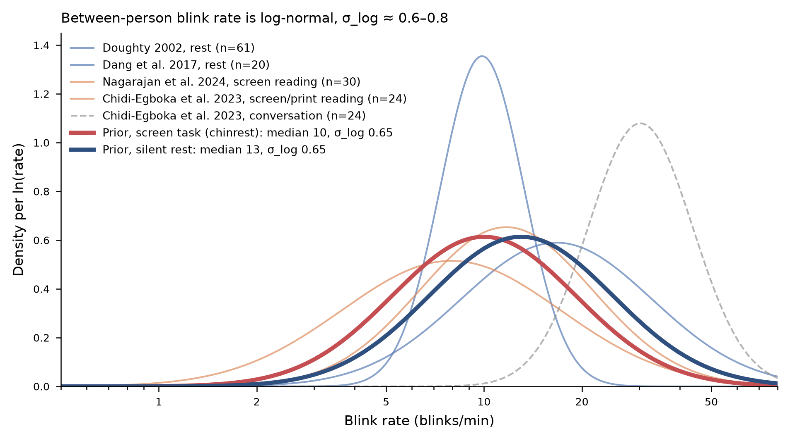
For a screen task with a chin rest, a log-normal distribution with median
10 blinks/min and SD 0.65 (of the log rate) describes these data well. The
thresholds for blinks.rate are 1, 2 and 3 SD above the median, rounded:
label |
blink rate |
share of people below |
|---|---|---|
good |
up to 20/min |
~84% (median + 1 SD) |
ok |
up to 35/min |
~98% (median + 2 SD) |
poor |
up to 70/min |
~99.9% (median + 3 SD) |
bad |
above 70/min |
A high blink rate is not a problem in itself, but it means more missing data, and very high rates often mean that something other than blinks (lost tracking, a drooping eyelid, glasses) is detected as blinks. A low blink rate gets no label: some people rarely blink, especially while concentrating.
blinks.time_pct (time in blinks) follows from the rate: a blink,
including the margins that blink detection masks around it, takes roughly
300 ms, so 20 blinks/min take about 10% of the time, 35 blinks/min about 20%
and 70 blinks/min about 35%. The bounds are therefore (10, 20, 35).
The figure is based on Doughty (2002) and Dang et al. (2017) for rest, Nagarajan et al. (2024) and Chidi-Egboka et al. (2023) for reading from a screen or print, and Chidi-Egboka et al. (2023) for conversation.
Blinks also affect the pupil itself. Each blink is followed by a pulse-like pupil response, a constriction followed by a dilation, of substantial size and duration (Yoo, Ahn, & Lee, 2021). Interpolating the missing samples during the blink does not remove this response. Because blinking depends on the task (people blink less while they concentrate and more after a response or at the end of a trial), the blink-locked response can differ between experimental conditions and be mistaken for an effect of the condition. A blink rate in the “good” range does not rule this out: if blinks are frequent or their timing differs between conditions, check the blink rate per condition, and consider modeling or removing the blink-locked response (Yoo et al., 2021).
Pupil#
pupil.missing_pct(10, 20, 40)Blinks alone make about 3–5% of the samples missing at a normal blink rate (10 blinks/min of ~300 ms each). In the reference data (see Reference data), the median is about 6% and three quarters of the recordings from lab setups have up to 10% missing data: this is the “good” range. Up to 20% is still common, also in good setups. Above 40%, a large part of the data has to be interpolated or is lost, and many studies would consider excluding the trial or participant.
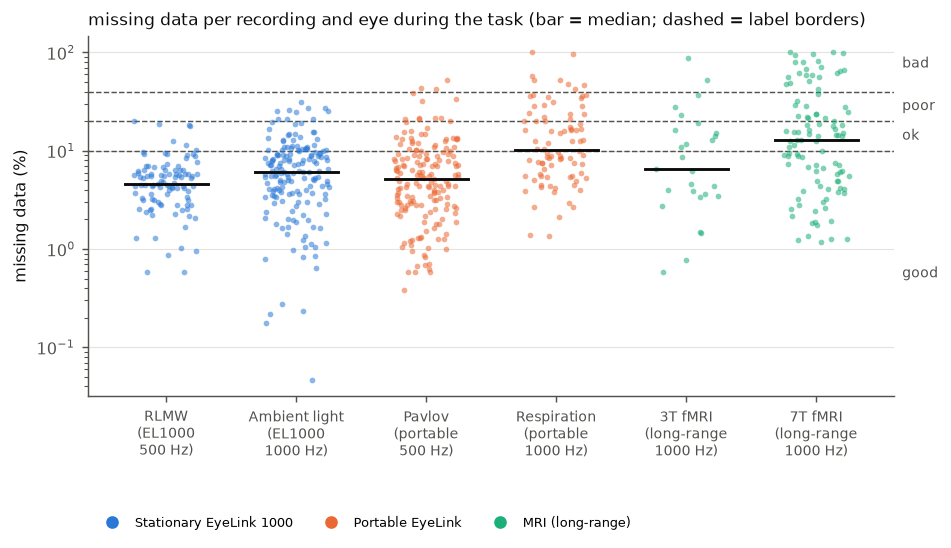
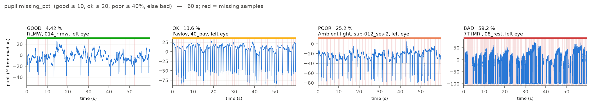
Examples of missing pupil data for each label (60 s of the task; red = missing samples).#
pupil.dropout_rate(30, 60, 150)In raw data, most dropouts are blinks. Up to 30 dropouts/min is within the range of normal blink rates (see Blink rate) and the median of the reference data (29/min). Rates above 60/min (about the top 20% of the reference data) are more than blinks can explain and point to unstable tracking; above 150/min (the top 5%), the tracking is lost again and again.
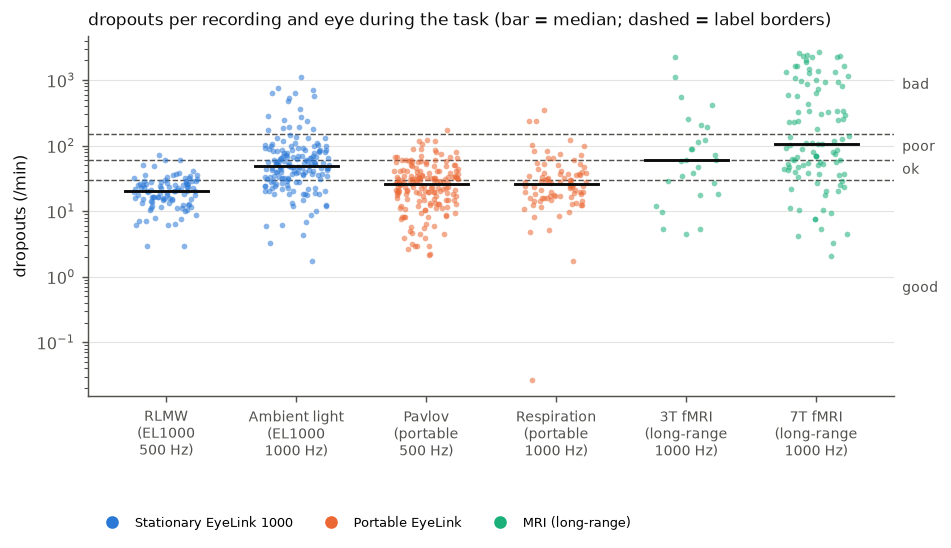
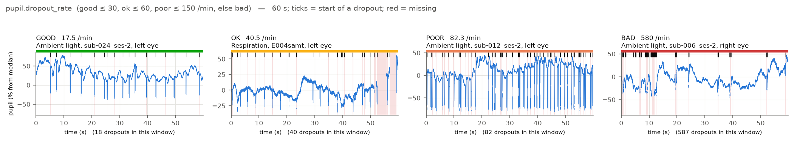
Examples of dropout rates for each label (60 s; ticks = start of a dropout).#
The “bad” example consists of bursts of very short (single-sample) gaps, which are easy to interpolate: a high dropout rate means that the tracking should be checked, not necessarily that the data are unusable.
pupil.longest_dropout(2, 5, 30)secondsBlinks rarely last longer than 0.5 s, and gaps of 1–2 s can still be interpolated. Dropouts of several seconds (eyes closed, looking away, head movement) cannot be interpolated sensibly and may take out whole trials; a dropout longer than 30 s means that the eye was lost for a substantial time. Three quarters of the recordings in the reference data have no dropout longer than 2 s. This measure depends strongly on what the recording contains: breaks in which the participant leaves the chin rest or closes the eyes give dropouts of minutes. Compute it on the task periods only.
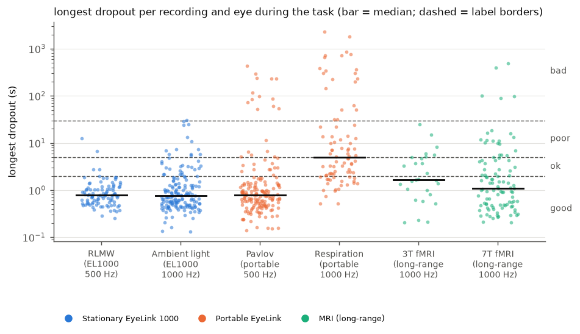
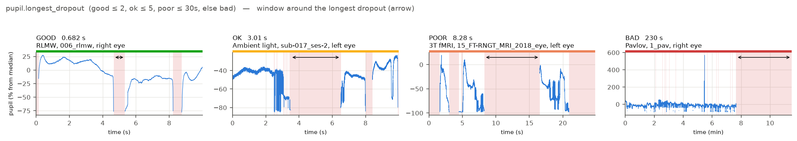
Examples of the longest dropout for each label (window around the longest dropout, marked by the arrow).#
pupil.noise(0.5, 1, 2)% of the median pupil sizeThe bounds are based on the noise in the reference data (see Reference data): stationary EyeLink 1000 systems, portable EyeLink systems and long-range EyeLink systems in a 3T and a 7T MRI scanner. The noise was computed with the quality report from the raw data (pupil area) of the task periods of each recording and eye.
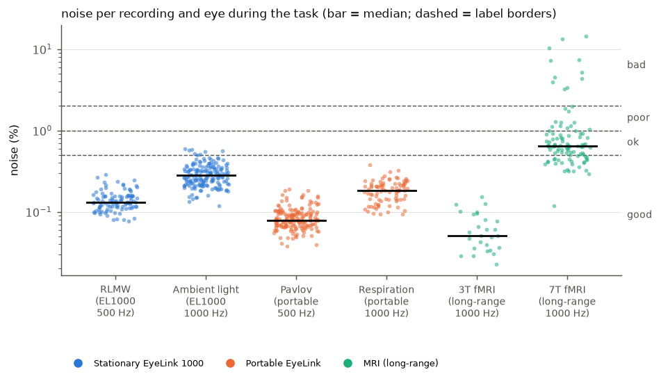
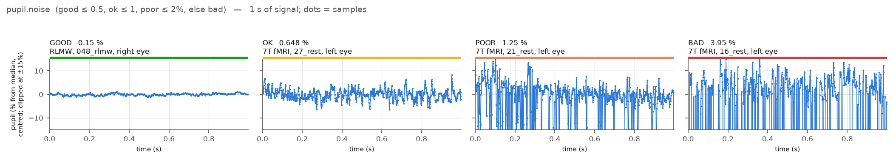
Examples of pupil noise for each label (1 s of the task, centered, same scale in all panels).#
The “ok”, “poor” and “bad” examples come from the 7T data (no other dataset exceeds 0.5%); there, the noise mostly consists of repeated drops of the pupil value from one sample to the next rather than of fine jitter.
In the lab setups and the 3T scanner, the medians of the datasets are between about 0.05% and 0.3%, and almost all recordings (99%, maximum 0.6%) are below 0.5%: this is the “good” range. In the 7T scanner, the median is about 0.65% and the spread is much larger, with about 10% of the recordings above 2%. The “ok” range (up to 1%) covers what a difficult setup typically gives; above 1% (“poor”) and especially above 2% (“bad”), the noise is unusual even for such setups, and the recording should be checked.
The noise also depends on the settings. In both pairs of datasets recorded with the same kind of tracker, the 1000 Hz data are noisier than the 500 Hz data (by about a factor of 2), and the tracker’s filter level matters as well. In the clean setups, the noise is often as small as the resolution of the pupil values allows (the tracker stores pupil area as whole numbers); there, smaller values mostly mean a larger pupil rather than less noise, so the measure separates noisy from clean recordings but does not rank clean recordings. All datasets recorded pupil area; in percent, the noise of the diameter is about half that of the area, so for diameter data, halving the bounds is a reasonable start. Six datasets cannot cover all eye trackers and settings, so treat the bounds as a starting point.
To see what is typical for your own setup, collect the measures of many files with
collect_quality_reference.py(see Labels and thresholds) and look at the rows withmetric == "noise". The table includes the eye tracker, pupil units and filter levels of each file, which explain much of the differences between setups.pupil.jump_rate(1, 10, 100)jumps per minuteThe number of changes from one sample to the next that are larger than 5% of the median pupil size. Physiological changes of the pupil are much slower, so such jumps are artifacts, e.g., distortions of the pupil image during saccades or a partly covered pupil. A jump away and back counts once. Changes within 50 ms of missing data are ignored, because the edges of every blink would otherwise count as jumps (the jump size and the margin are set by
pypillometry.quality.JUMP_PCTandJUMP_DROPOUT_MARGIN_MS).In the reference data from lab setups, jumps are rare (median 0.2/min, 69–99% of the recordings of each dataset at most 1/min). In both MRI scanners, they are frequent (median 64/min at 7T and about 200/min at 3T), also in the 3T data whose noise is the lowest of all datasets: the jumps catch artifacts that the noise measure, which is robust to single outliers, does not see.
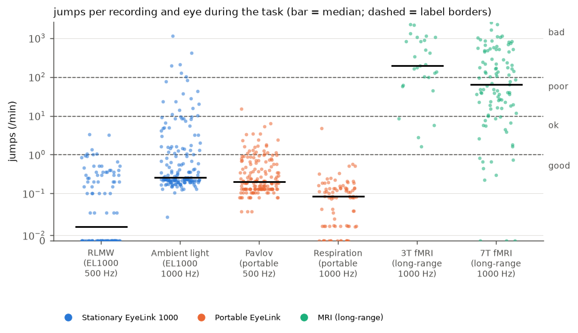
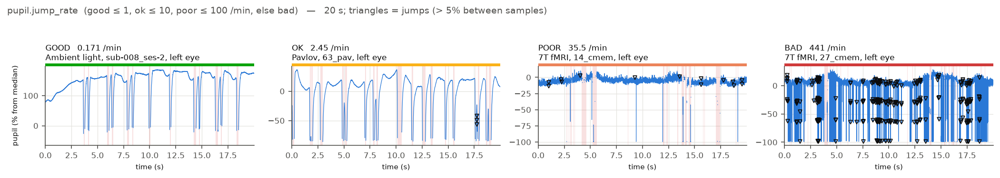
Examples of jump rates for each label (20 s; triangles = counted jumps). Changes at the edges of blinks are not counted.#
Gaze#
gaze.missing_pct,gaze.dropout_rate,gaze.longest_dropoutSame bounds and reasoning as for the pupil.
gaze.offscreen_pct(5, 15, 30)% of valid samplesIn a screen experiment, participants should look at the screen. Off-screen samples come from looking away or from a calibration that is off, and they are usually unusable. In the reference data, the median is 0.6% and 95% of the recordings from lab setups are below 5%. This needs the screen size (see
set_experimental_setup()).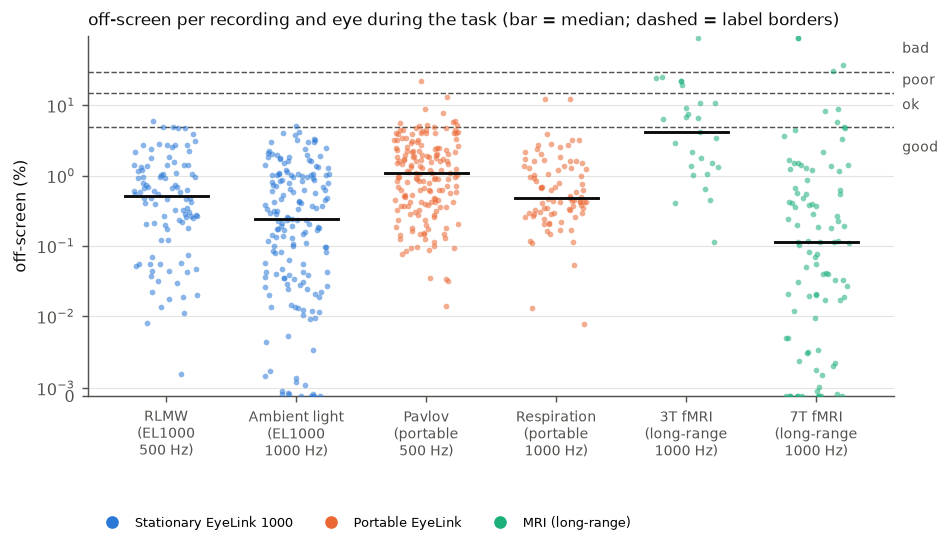
gaze.precision_deg(0.05, 0.1, 0.2)degreesThe median distance between consecutive samples (sample-to-sample precision). Tower-mounted and desktop video eye trackers typically achieve a few hundredths of a degree with a chin rest (Holmqvist, Nyström, & Mulvey, 2012). Values of 0.1–0.2° or more suggest a poor pupil or corneal reflection image, or head movement. The value depends on the sampling rate and the tracker’s filters, so compare it between recordings of the same setup. Without screen size and eye distance the precision is reported in pixels without a label.
Both eyes#
binocular.pupil_correlation(0.9, 0.8, 0.6)The pupils of both eyes respond together (the light reflex is consensual), so their sizes should be very highly correlated. A lower correlation usually means that one eye was tracked poorly. In the reference data, the median is 0.97 and 91% of the binocular recordings are at or above 0.9. The correlation also depends on how much the pupil changes during a recording: with large, light-driven changes it is close to 1 (Ambient light), with small changes it is lower although both eyes are tracked well.
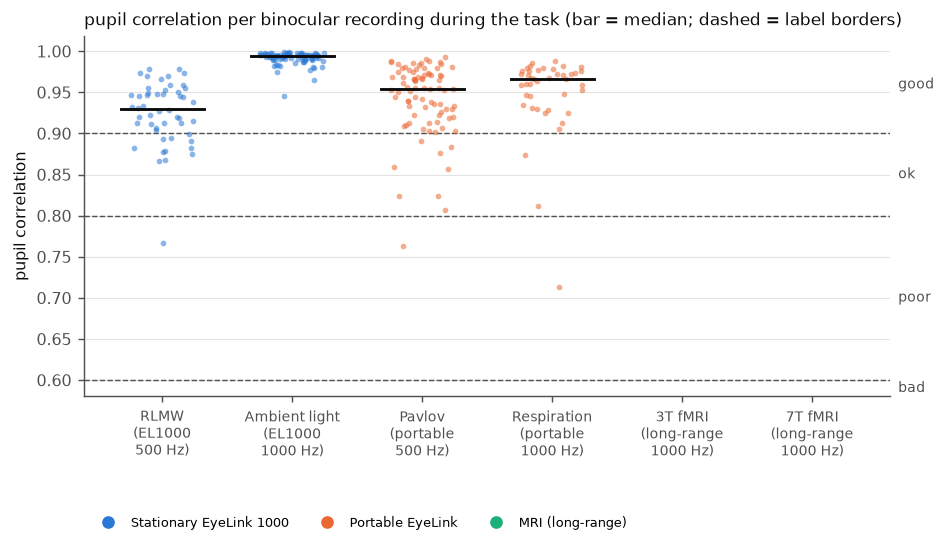
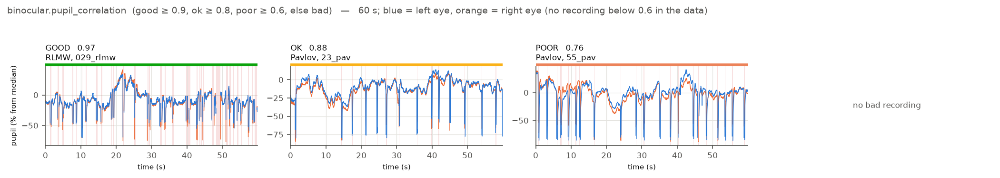
Examples of the correlation between the eyes for each label (60 s; blue = left, orange = right eye). No recording in the reference data is below 0.6.#
binocular.gaze_disparity_deg(1, 2, 3)degreesBoth eyes look at the same point, apart from small vergence differences. With a calibration accuracy of about 0.5° per eye, disparities up to 1° are expected. Larger disparities point to a calibration problem in one eye.
Preprocessing#
artifacts.pupil_masked_pct,artifacts.gaze_masked_pct(10, 20, 35)The share of samples that preprocessing masked (blinks with their margins and other artifacts). The bounds match those for the time in blinks: masking only the blinks of a typical recording gives about 5–10%.
artifacts.interpolated_pct(10, 20, 30)Interpolated data are an estimate, not a measurement. If more than 20–30% of the data is interpolated, results depend heavily on the interpolation.
Calibration#
calibration.mean_error(0.5, 1.0, 1.5),calibration.max_error(1.0, 1.5, 2.0)degreesThe first two bounds follow the Eyelink validation ratings: GOOD with a mean error up to 0.5° and a maximum error up to 1°, FAIR up to 1° and 1.5°. The third bound (between “poor” and “bad”) is our choice. In the reference data (five datasets with calibration data), the median mean error is 0.42° and the median maximum error 0.77°; 70% and 77% of the validations are “good”, and 1% and 7% are “poor” or “bad”.
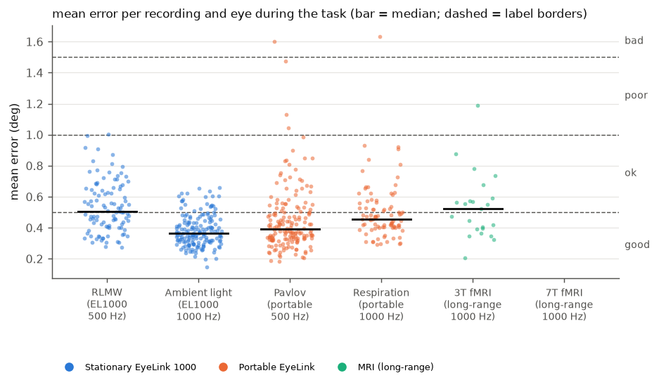
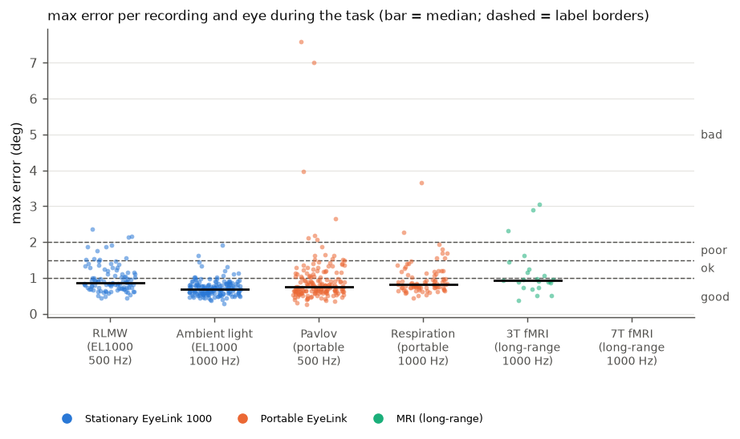
References#
Chidi-Egboka, N. C., Jalbert, I., Chen, J., Briggs, N. E., & Golebiowski, B. (2023). Blink rate measured in situ decreases while reading from printed text or digital devices, regardless of task duration, difficulty, or viewing distance. Investigative Ophthalmology & Visual Science, 64(2), 14. https://doi.org/10.1167/iovs.64.2.14
Dang, L. C., Samanez-Larkin, G. R., Castrellon, J. J., Perkins, S. F., Cowan, R. L., Newhouse, P. A., & Zald, D. H. (2017). Spontaneous eye blink rate (EBR) is uncorrelated with dopamine D2 receptor availability and unmodulated by dopamine agonism in healthy adults. eNeuro, 4(5), ENEURO.0211-17.2017. https://doi.org/10.1523/ENEURO.0211-17.2017
Doughty, M. J. (2002). Further assessment of gender- and blink pattern-related differences in the spontaneous eyeblink activity in primary gaze in young adult humans. Optometry and Vision Science, 79(7), 439–447. https://doi.org/10.1097/00006324-200207000-00013
Holmqvist, K., Nyström, M., & Mulvey, F. (2012). Eye tracker data quality: What it is and how to measure it. In Proceedings of the Symposium on Eye Tracking Research and Applications (ETRA ‘12) (pp. 45–52). https://doi.org/10.1145/2168556.2168563
Nagarajan, K., Ravi, K., Periakaruppan, S. P., & Satgunam, P. (2024). When noise becomes signal: A study of blink rate using an eye tracker. The Ocular Surface, 34, 516–520. https://doi.org/10.1016/j.jtos.2024.11.002
Yoo, K., Ahn, J., & Lee, S.-H. (2021). The confounding effects of eye blinking on pupillometry, and their remedy. PLOS ONE, 16(12), e0261463. https://doi.org/10.1371/journal.pone.0261463